Universidad de Concepción
Dirección de Postgrado
Facultad de Ingeniería
| Autor: | Jaime Andres González Rojas |
| Profesor Guía: | Phd. Juan Antonio Carrasco Montagna |
| Ev. Interno programa: | Phd. Sebastián Astroza Tagle |
| Ev. Externo Programa UdeC: | Phd.Carlos Camilo Navarrete Lizama |
| Ev. Externo Programa otra Universidad: | |
| Lugar y fecha: |
Crítica de Hägerstrand a la ciencia regional
En 1970, la ciencia regional tendía a analizar el territorio mediante flujos agregados, zonas, regiones, matrices origen-destino, densidades y promedios.
Sin embargo, Hägerstrand (Hägerstrand 1970) plantea una crítica central:
¿Dónde están las personas reales?
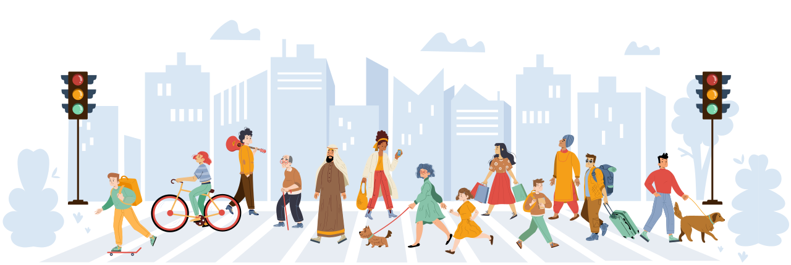
Motivación
¿Coincide la oferta de transporte público con la actividad urbana a lo largo del día?
1 Situación actual
Los datos GPS y otras fuentes permiten observar la oferta de buses, la presencia de personas y las actividades urbanas a lo largo del día.
2 Problema
Estas dimensiones suelen analizarse por separado:
3 Consecuencias
4 Oportunidad
Integrar estas dimensiones para identificar cuándo y dónde ocurren desajustes entre la oferta de transporte público y la actividad urbana.
Pregunta de investigación
¿En qué medida se alinea temporalmente la oferta de transporte público con la presencia de personas y la disponibilidad de oportunidades urbanas en un área determinada?
Oferta de transporte público
Si disponemos de registros GPS de los buses.
| Fecha | Hora | Patente | Headway (min) |
|---|---|---|---|
| 2026-01-06 | 07:26:01 | JPRY91 | NaN |
| 2026-01-06 | 09:15:17 | RBTW74 | 109.258433 |
| 2026-01-06 | 09:25:00 | JPWD29 | 9.716867 |
| 2026-01-06 | 09:28:55 | GXYY75 | 3.924050 |
¿Podemos caracterizar cómo varía la oferta de transporte público a lo largo del día?
Actividad urbana
Si conocemos la presencia de personas y la disponibilidad horaria de los POI.
¿Podemos caracterizar cómo varía la actividad urbana a lo largo del día?
Objetivo general
Desarrollar una metodología de análisis espacio-temporal para evaluar la correspondencia entre la cobertura del transporte público y la disponibilidad de oportunidades urbanas en torno a los puntos de acceso.
Frecuencia y continuidad
Población flotante
Disponibilidad temporal
Evaluación de la
correspondencia espacio-temporalObjetivos específicos
Caracterizar la oferta de buses mediante su frecuencia y continuidad temporal en los puntos de acceso.
Caracterizar la actividad urbana mediante la disponibilidad de oportunidades y la presencia de población.
Diseñar indicadores de cobertura, oportunidades urbanas y desalineación espacio-temporal.
Aplicar y comparar la metodología en áreas con distintas condiciones urbanas y de transporte público.
En la actualidad
Public Transport Accessibility Level
Metodología desarrollada por Transport for London (Transport for London 2010) para caracterizar la accesibilidad al transporte público a partir de la oferta disponible.
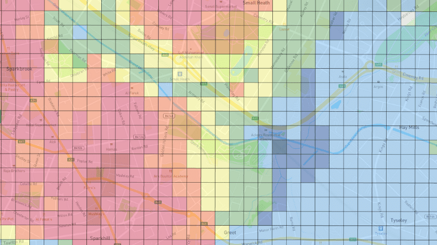
¿Qué tan accesible es el transporte público desde un punto del territorio?
Actividad urbana espacio-temporal
Google Popular Times permite caracterizar la variación temporal de la actividad urbana a partir de patrones horarios de ocupación (Barrena-Herrán et al. 2025).
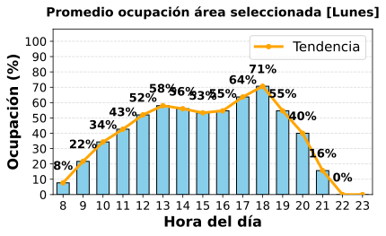
Población flotante
Lee et al. (Lee et al. 2018) emplean datos de telefonía móvil para representar la presencia espacial de personas y analizar su relación con la accesibilidad al transporte público.
Presencia dinámica
Los datos de telefonía móvil permiten incorporar una representación dinámica de la presencia de personas en el territorio, más allá de una caracterización exclusivamente residencial.
Integración de la dimensión temporal
Accesibilidad dinámica
Condiciones variables de accesibilidad
Las condiciones de la red y la atractividad de los destinos pueden variar durante el día, generando distintos niveles de accesibilidad según el momento (Moya-Gómez et al. 2018).
RED ↔︎ OPORTUNIDADES
Oportunidades dinámicas
Disponibilidad temporal
Las oportunidades urbanas no permanecen constantes durante el día: su disponibilidad y actividad dependen del momento en que son observadas (Barrena-Herrán et al. 2025).
OPORTUNIDADES ↔︎ TIEMPO
La incorporación de la dimensión temporal permite representar una ciudad cuyas condiciones de acceso y actividad cambian a lo largo del día.
Exploración espacial de la oferta
¿Cómo se distribuye espacialmente la oferta de transporte público en el área de estudio?
A partir de los registros GPS observados, se utiliza una adaptación del PTAL para explorar espacialmente la intensidad de la oferta de transporte público.
REGISTROS GPS → PTAL → CARACTERIZACIÓN ESPACIAL
Formulación inspirada en PTAL: frecuencia observada e impedancia peatonal
Se adapta el enfoque PTAL incorporando la frecuencia observada y la impedancia peatonal para caracterizar espacialmente la oferta de transporte público y seleccionar áreas contrastantes de análisis.
\[ PTAL_c = \sum_{i \in S_c} P(t_i)\, \min\left(1,\frac{f_i}{F_{\max}}\right) \]
Selección de áreas: baja, intermedia y alta conectividad corresponden a categorías derivadas de la aproximación PTAL, no a la clasificación de resultados del framework.
Calibración de los niveles de servicio
¿Cómo determinar niveles de servicio que representen las condiciones operacionales locales?
Como referencia, se utilizan los niveles de servicio (LOS) del TCQSM (Transportation Research Board 2003). Sin embargo, sus umbrales responden a condiciones operacionales de otro contexto, por lo que se requiere una calibración local con datos observados.
81 ACCESOS → CORTES NATURALES DE JENKS → LOS CALIBRADOS
Calibración de los niveles de servicio
Calibración local mediante Jenks
Los umbrales de los niveles de servicio se obtienen mediante el método de cortes naturales de Jenks (Jenks y Caspall 1971), aplicado por separado a las variables de frecuencia (veh/h) y de regularidad del servicio (gap máximo).
Objetivo
Minimizar la variabilidad dentro de cada clase y maximizar la variabilidad entre clases, identificando agrupaciones naturales en la distribución de los datos.
\[ J = \sum_{k=1}^{K} \sum_{i \in C_k} \left(x_i-\overline{x}_k\right)^2 \]
\[ \begin{aligned} K &: \text{Número de clases} \\ C_k &: \text{Clase } k \\ x_i &: \text{Observación } i \\ \overline{x}_k &: \text{Media de la clase } k \end{aligned} \]
Procedimiento
Resultado
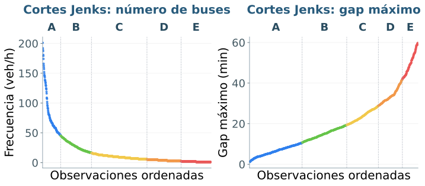
Referencia TCQSM
Calibración local — Jenks
| LOS | Headway [min] | veh/h | Gap máximo [min] | veh/h | Score |
|---|---|---|---|---|---|
| A | < 10 | > 6 | ≤ 10,67 | ≥ 46 | 1,0 |
| B | 10–14 | 5–6 | ≤ 19,37 | 17–45 | 0,8 |
| C | 15–20 | 3–4 | ≤ 28,78 | 7–16 | 0,6 |
| D | 21–30 | 2 | ≤ 41,75 | 3–6 | 0,4 |
| E | 31–60 | 1 | ≤ 60,00 | 1–2 | 0,2 |
| F | > 60 | < 1 | – | 0 | 0,0 |
Extracción y tratamiento de datos geoespaciales
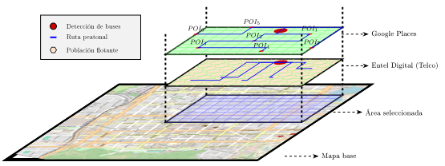
Superposición espacial
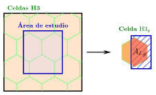
Fuente: Elaboración propia basada en interpolación areal clásica (Goodchild y Lam 1980).
Sea:
Ponderación por área de intersección:
\[ X_g^{*} = X_g \frac{A_{I,g}}{A_g} \]
Estimación total en el área de estudio:
\[ X_{\text{total}} = \sum_{g \in G_I} X_g \frac{A_{I,g}}{A_g} \]
Impedancia por tiempo de caminata
POI y población flotante se ponderan según su tiempo de caminata hacia el acceso.
Obtención del tiempo de caminata
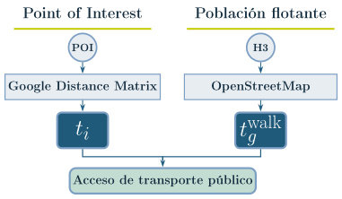
Penalización por tiempo de caminata:
\[ P^{\mathrm{time}}(t)= \begin{cases} 1, & t \leq 10 \\[3pt] \exp\!\left[-k(t-10)^{1.1}\right], & 10 < t < 30 \\[3pt] 0, & t \geq 30 \end{cases} \]
\[ k=-\frac{\ln(0.1)}{(25-10)^{1.1}} \]
Función de impedancia
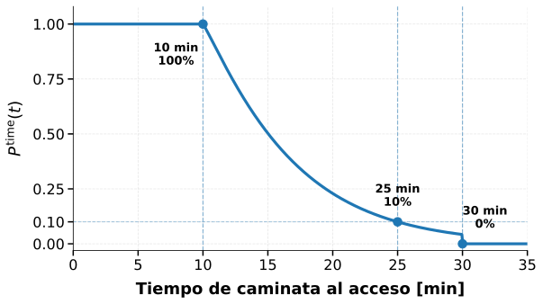
La impedancia se calcula a partir del tiempo de caminata sobre la red peatonal, no de la distancia euclidiana. Función de impedancia basada en (Vale y Pereira 2017).
Score de frecuencia \(\big(S^{\mathrm{frec}}_{h}\big)\)
Evalúa las condiciones del servicio de buses en cada bloque horario.
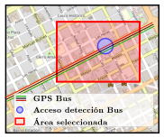
Frecuencia
Continuidad
\(N_h\) y \(G_h^{\max}\) → clasificación según LOS calibrados
\[ G^{\max}_{h} = \max\left\{ \tau_{1,h}-t_h^0,\; \max_{j=2,\ldots,N_h} \left(\tau_{j,h}-\tau_{j-1,h}\right),\; t_h^1-\tau_{N_h,h} \right\} \]
\[ S^{N}_{h} = \mathcal{S}_{N}(N_h) \qquad\qquad S^{G}_{h} = \mathcal{S}_{H}\left(G^{\max}_{h}\right) \]
\[ S^{\mathrm{frec}}_{h} = \begin{cases} 0, & N_h=0, \\[5pt] \min\left\{ S^{N}_{h}, S^{G}_{h} \right\}, & N_h>0. \end{cases} \]
| LOS | Gap máximo [min] | veh/h | Score | Comentario |
|---|---|---|---|---|
| A | ≤ 10,67 | ≥ 46 | 1,0 | Servicio local de muy alta frecuencia y elevada continuidad. |
| B | ≤ 19,37 | 17–45 | 0,8 | Servicio local de alta frecuencia y buena continuidad. |
| C | ≤ 28,78 | 7–16 | 0,6 | Servicio local de frecuencia y continuidad intermedias. |
| D | ≤ 41,75 | 3–6 | 0,4 | Servicio local de baja frecuencia y discontinuidad elevada. |
| E | ≤ 60,00 | 1–2 | 0,2 | Servicio local disponible, pero de muy baja frecuencia. |
| F | – | 0 | 0,0 | Ausencia de servicio durante el bloque horario. |
KPI de Cobertura \(\big(KPI^{\text{Cobertura}}_h\big)\)
Evalúa la correspondencia temporal entre la presencia relativa de población y las condiciones del servicio de buses.
Construcción del indicador
\[ KPI^{\text{Cobertura}}_h = P^{\text{float}}_h \cdot S^{\text{frec}}_h \]
Desbalance servicio–población
\[ D^{PS}_h = S^{\text{frec}}_h - P^{\text{float}}_h \\[12pt] \begin{cases} D^{PS}_h > 0 & \text{Servicio > Población}\\ D^{PS}_h = 0 & \text{Equilibrio}\\ D^{PS}_h < 0 & \text{Población > Servicio} \end{cases} \]
Clasificación de categorías de POI
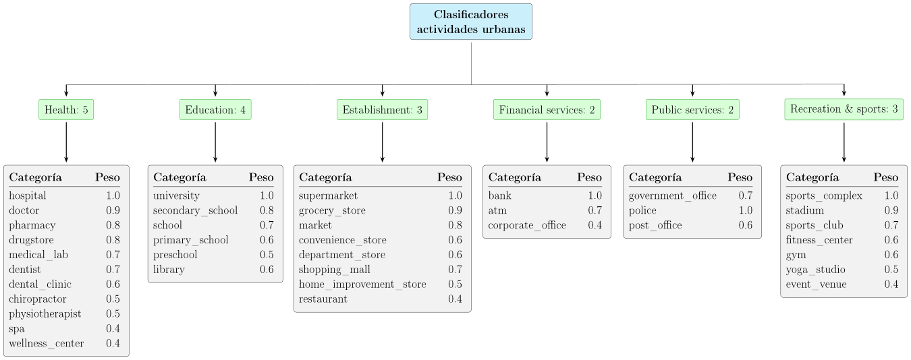
La ponderación de los POI reconoce que distintos tipos de actividades presentan diferentes niveles de atracción, asociados a sus características y capacidad de generación de viajes (Klinkhardt et al. 2021).
Peso temporal del POI
“No basta con que exista una oportunidad, esta debe estar disponible en el momento en que el usuario puede acceder a ella.”
“Un supermercado abierto solo 2 horas tiene menor accesibilidad efectiva.”
Pesos temporales definidos manualmente:
hospital | Hora: {'0': 4, '1': 4, '2': 4, '3': 4, '4': 4, '5': 4, '6': 4, '7': 5, '8': 5, '9': 5, '10': 5, '11': 5, '12': 5, '13': 5, '14': 5, '15': 5, '16': 5, '17': 5, '18': 5, '19': 5, '20': 5, '21': 5, '22': 5, '23': 5}
clinic | Hora: {'6': 2, '7': 4, '8': 5, '9': 5, '10': 5, '11': 5, '12': 5, '13': 5, '14': 5, '15': 5, '16': 4, '17': 4, '18': 3}
doctor | Hora: {'7': 4, '8': 5, '9': 5, '10': 5, '11': 5, '12': 5, '13': 4, '14': 4, '15': 4, '16': 4, '17': 3}
medical_lab | Hora: {'7': 4, '8': 5, '9': 5, '10': 5, '11': 5, '12': 4, '13': 4, '14': 4, '15': 3, '16': 3}
dental_clinic | Hora: {'8': 4, '9': 5, '10': 5, '11': 5, '12': 4, '13': 4, '14': 4, '15': 4, '16': 3}
dentist | Hora: {'8': 4, '9': 5, '10': 5, '11': 5, '12': 4, '13': 4, '14': 4, '15': 4, '16': 3}
physiotherapist | Hora: {'8': 4, '9': 4, '10': 4, '11': 4, '12': 4, '15': 4, '16': 4, '17': 4, '18': 3}
pharmacy | Hora: {'0': 3, '1': 3, '2': 3, '3': 3, '4': 3, '5': 3, '6': 3, '7': 4, '8': 4, '9': 4, '10': 4, '11': 4, '12': 4, '13': 4, '14': 4, '15': 4, '16': 4, '17': 4, '18': 4, '19': 4, '20': 4, '21': 3, '22': 3, '23': 3}
drugstore | Hora: {'8': 3, '9': 3, '10': 3, '11': 3, '12': 3, '13': 3, '17': 3, '18': 3, '19': 3, '20': 3}
preschool | Hora: {'6': 2, '7': 5, '8': 5, '9': 4, '10': 4, '11': 3, '12': 3, '13': 4, '14': 4, '15': 5, '16': 4}
primary_school | Hora: {'6': 2, '7': 5, '8': 5, '9': 4, '10': 4, '11': 3, '12': 3, '13': 4, '14': 4, '15': 5, '16': 4}
secondary_school | Hora: {'6': 2, '7': 5, '8': 5, '9': 4, '10': 4, '11': 3, '12': 3, '13': 4, '14': 4, '15': 5, '16': 4}
school | Hora: {'6': 2, '7': 5, '8': 5, '9': 4, '10': 4, '11': 3, '12': 3, '13': 4, '14': 4, '15': 5, '16': 4}
university | Hora: {'6': 2, '7': 4, '8': 5, '9': 5, '10': 5, '11': 5, '12': 4, '13': 4, '14': 4, '15': 4, '16': 4, '17': 4, '18': 4, '19': 3, '20': 3, '21': 2}
library | Hora: {'9': 4, '10': 4, '11': 4, '12': 4, '13': 4, '14': 4, '15': 4, '16': 4, '17': 3, '18': 3}
supermarket | Hora: {'8': 3, '9': 3, '10': 4, '11': 4, '12': 5, '13': 5, '14': 4, '15': 3, '16': 3, '17': 4, '18': 5, '19': 5, '20': 4, '21': 3}
grocery_or_supermarket | Hora: {'8': 3, '9': 3, '10': 4, '11': 4, '12': 5, '13': 5, '14': 4, '15': 3, '16': 3, '17': 4, '18': 5, '19': 5, '20': 4, '21': 3}
shopping_mall | Hora: {'11': 3, '12': 3, '13': 3, '14': 4, '15': 4, '16': 4, '17': 5, '18': 5, '19': 4, '20': 3, '21': 2}
clothing_store | Hora: {'11': 3, '12': 3, '13': 3, '14': 4, '15': 4, '16': 4, '17': 5, '18': 4, '19': 3}
restaurant | Hora: {'12': 5, '13': 5, '14': 4, '15': 3, '16': 3, '17': 3, '18': 4, '19': 5, '20': 5, '21': 4, '22': 3, '23': 2}
cafe | Hora: {'7': 3, '8': 4, '9': 4, '10': 4, '11': 4, '12': 3, '15': 2, '16': 2}
fast_food | Hora: {'12': 4, '13': 4, '14': 4, '19': 4, '20': 4, '21': 4, '22': 3, '23': 2}
movie_theater | Hora: {'18': 3, '19': 4, '20': 5, '21': 5, '22': 4, '23': 3}
gym | Hora: {'6': 4, '7': 4, '8': 3, '18': 5, '19': 5, '20': 4, '21': 3}
bank | Hora: {'8': 3, '9': 5, '10': 5, '11': 5, '12': 5, '13': 4, '14': 4, '15': 3}
atm | Hora: {'0': 3, '1': 3, '2': 3, '3': 3, '4': 3, '5': 3, '6': 3, '7': 3, '8': 3, '9': 3, '10': 3, '11': 3, '12': 3, '13': 3, '14': 3, '15': 3, '16': 3, '17': 3, '18': 3, '19': 3, '20': 3, '21': 3, '22': 3, '23': 3}
police | Hora: {'0': 5, '1': 5, '2': 5, '3': 5, '4': 5, '5': 5, '6': 5, '7': 5, '8': 5, '9': 5, '10': 5, '11': 5, '12': 5, '13': 5, '14': 5, '15': 5, '16': 5, '17': 5, '18': 5, '19': 5, '20': 5, '21': 5, '22': 5, '23': 5}
residencia | Hora: {'6': 2, '7': 4, '8': 5, '9': 3, '17': 3, '18': 4, '19': 3}
Se considera la disponibilidad temporal de las actividades siguiendo (Neutens et al. 2012).
Caracterización de las oportunidades urbanas
Cada POI se caracteriza según su disponibilidad temporal \(\big(B^{\mathrm{POI}}_{i,h}\big)\), atractividad observada \(\big(G_i^{\mathrm{Review}}\big)\) e importancia funcional–temporal \(\big(W^{\mathrm{POI}}_{i,h}\big)\).
Disponibilidad temporal
\[ B^{\text{POI}}_{i,h} = \begin{cases} 1, & \text{abierto} \\[3pt] 0.5, & \text{sin información} \\[3pt] 0, & \text{cerrado} \end{cases} \]
Los horarios de apertura condicionan la disponibilidad temporal de las oportunidades urbanas (Neutens et al. 2012; McKenzie et al. 2015).
Atractividad observada
\[ G_{i}^{\text{Review}} = \min\left\{ 1,\, \frac{\text{Rating}_{i}}{5} \cdot \frac{ \ln\!\left(1+\text{N_rating}_{i,c}\right) }{ \ln\!\left( 1+P_{90}\!\left(\text{N_rating}_{c}\right) \right) } \right\} \]
Las oportunidades pueden diferenciarse según su atractividad y características asociadas al destino (Psyllidis et al. 2022; Moya-Gómez et al. 2018).
Importancia funcional–temporal
\[ W^{\text{POI}}_{i,h} = \sqrt{ \frac{ w^{\text{class}}_{g(i)} \cdot w^{\text{cat}}_{c(i)} \cdot w^{\text{time}}_{c(i),h} }{25} } \]
La función del POI y sus patrones temporales permiten distinguir la relevancia de las oportunidades a lo largo del día (Psyllidis et al. 2022; Betancourt et al. 2023).
KPI de Oportunidades urbanas
Cuantifica la proporción ponderada de oportunidades urbanas disponibles durante cada hora respecto de su potencial total.
Oportunidades del área de estudio
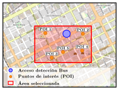
¿Qué aporta cada POI?
\[ B^{\mathrm{POI}}_{i,h} \]
Disponibilidad
\[ W^{\mathrm{POI}}_{i,h} \]
Importancia funcional-temporal
\[ G_i^{\mathrm{Review}} \]
Atractividad
\[ P_i^{\mathrm{time}} \]
Impedancia peatonal
Disponibilidad efectiva y potencial
\[ \begin{aligned} A_{i,h} &= B^{\mathrm{POI}}_{i,h} \cdot W^{\mathrm{POI}}_{i,h} \cdot G_i^{\mathrm{Review}} \cdot P_i^{\mathrm{time}} \\[8pt] A^{\mathrm{pot}}_{i,h} &= W^{\mathrm{POI}}_{i,h} \cdot G_i^{\mathrm{Review}} \cdot P_i^{\mathrm{time}} \end{aligned} \]
\[ KPI^{\mathrm{Opt}}_h = \frac{ \displaystyle\sum_{i\in\mathcal I} A_{i,h} }{ \displaystyle\sum_{i\in\mathcal I} A^{\mathrm{pot}}_{i,h} } \]
\(0 \leq KPI_h^{\mathrm{Opt}} \leq 1\)
Valores próximos a 1 indican que una mayor proporción del potencial ponderado de oportunidades está disponible durante la hora \(h\).
Fuentes de datos utilizadas en el análisis
La metodología integra información de transporte público, población flotante, oportunidades urbanas y red peatonal.
🚌 Oferta de transporte público
7 días de observaciones
1.481 buses monitoreados
11–17 mayo 2026
05:00–24:00 h
Eventos GPS / GTFS-RT
Fuente: GTFS-RT
📶 Población flotante
Unidad espacial: H3 resolución 9
Resolución temporal: 1 hora
Horario: 07:00–22:00 h
Período: semana tipo de agosto de 2025
Fuente: Crowds – Entel Digital
📍 Oportunidades urbanas
POI: localización y categoría
Disponibilidad: horarios de apertura
Atractividad: rating y número de reseñas
Fuente: Google Places + Popular Times
🚶 Red peatonal
Fuente espacial: OpenStreetMap
Uso: cálculo de rutas y tiempos de caminata
Aplicación: impedancia entre H3/POI y acceso
Fuente: OpenStreetMap
Áreas de estudio seleccionadas mediante un enfoque basado en PTAL
| Categoría | Baja | Inter. | Alta | Categoría | Baja | Inter. | Alta | Categoría | Baja | Inter. | Alta |
|---|---|---|---|---|---|---|---|---|---|---|---|
| Restaurant | 8 | 18 | 213 | Bank | 1 | – | 27 | Police | 3 | – | 7 |
| Doctor | 16 | 8 | 135 | Event Venue | 1 | 10 | 16 | Sports Club | 1 | 2 | 7 |
| Pharmacy | 4 | 8 | 60 | Home Improvement Store | 3 | – | 22 | Department Store | – | – | 6 |
| School | 8 | 10 | 52 | Supermarket | – | 5 | 18 | Drugstore | – | – | 6 |
| Hospital | 6 | 7 | 56 | Sports Complex | 1 | 4 | 14 | Post Office | – | 1 | 5 |
| Grocery Store | 6 | 11 | 48 | Convenience Store | – | – | 14 | Primary School | 1 | 3 | 2 |
| Government Office | 2 | 8 | 53 | Market | 1 | 1 | 11 | Fitness Center | 1 | – | 4 |
| Shopping Mall | 2 | 3 | 58 | Preschool | – | 4 | 8 | Stadium | – | 4 | 1 |
| Dentist | 2 | 3 | 50 | Secondary School | – | 1 | 11 | Spa | – | – | 4 |
| University | 21 | – | 31 | ATM | – | – | 11 | Physiotherapist | – | 1 | 2 |
| Dental Clinic | 1 | 5 | 42 | Medical Lab | 1 | 3 | 7 | Chiropractor | – | – | 1 |
| Corporate Office | 5 | – | 42 | Wellness Center | 1 | 1 | 9 | Library | – | 1 | – |
| Gym | 2 | 3 | 29 |
| Indicador | Área baja | Área intermedia | Área alta |
|---|---|---|---|
| POI identificados | 98 | 125 | 1.082 |
| Categoría predominante | University (21) | Restaurant (18) | Restaurant (213) |
| Segunda categoría | Doctor (16) | Grocery Store (11) | Doctor (135) |
| Tercera categoría | School (8) | School (10) | Pharmacy (60) |
| Número de categorías distintas | 24 | 25 | 36 |
Área de alta conectividad - Promedio Lunes a Viernes
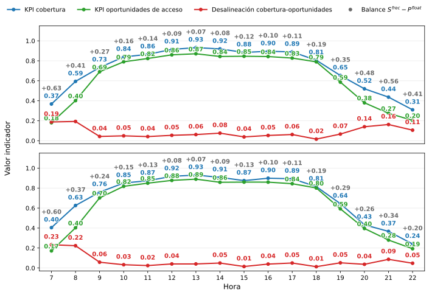
Área de intermedia conectividad - Promedio Lunes a Viernes
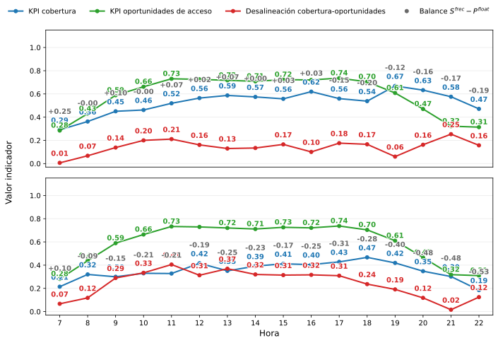
Área de baja conectividad - Promedio Lunes a Viernes
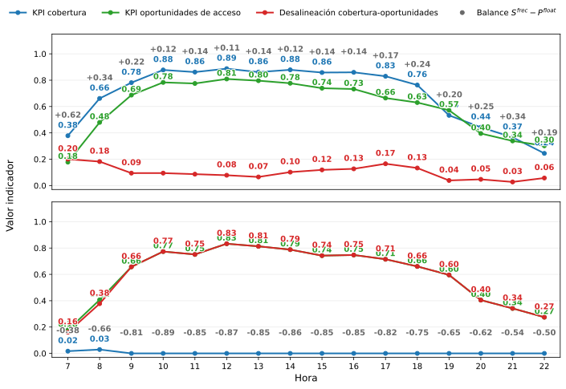
Área de alta conectividad - Sábado
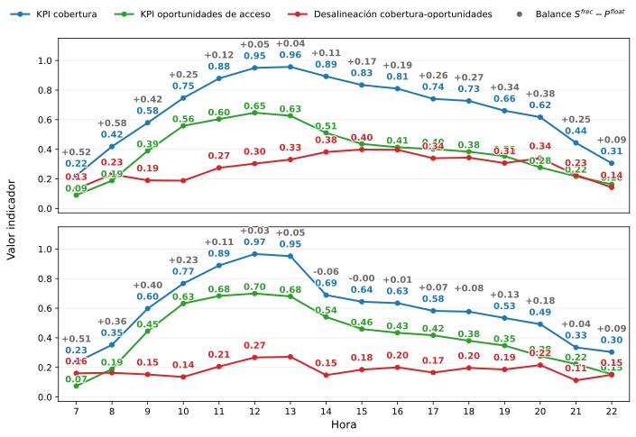
Área de alta conectividad - Domingo
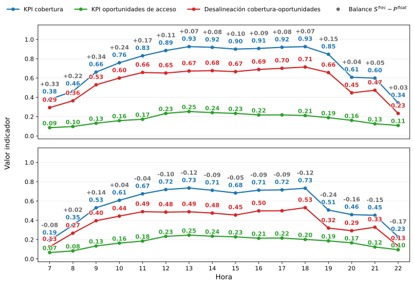
Área de intermedia conectividad - Sábado
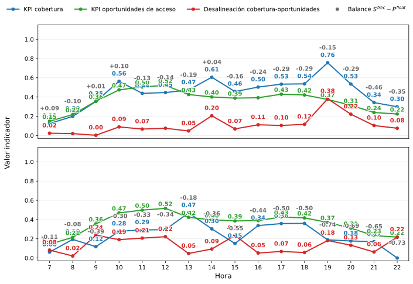
Área de intermedia conectividad - Domingo
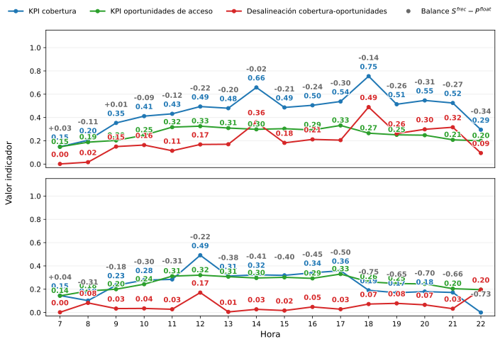
Área de baja conectividad - Sábado
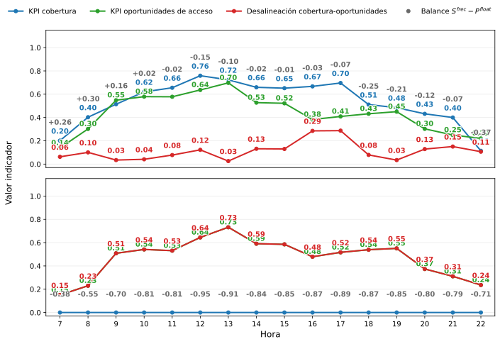
Área de baja conectividad - Domingo
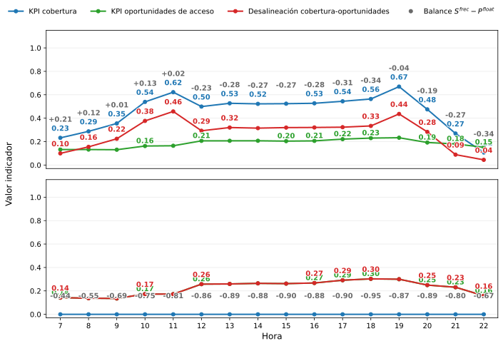
Aportes de la metodología
La metodología integra transporte, población y oportunidades urbanas para identificar señales de alineación y desalineación temporal.
Integración multidimensional
Integra provisión de transporte, presencia de población y oportunidades urbanas en un mismo marco.
Diagnóstico temporal
Identifica señales de alineación y desalineación entre las tres dimensiones a lo largo del día.
Diagnóstico a escala local
Evalúa cada acceso incorporando condiciones peatonales y oportunidades alcanzables en su entorno.
Adaptabilidad territorial
Permite adaptar el framework a distintos territorios mediante parámetros definidos para el contexto de análisis.
Síntesis metodológica
Permite identificar cuándo y dónde emergen señales de alineación o desalineación entre la provisión de transporte, la presencia de población y las oportunidades disponibles.
Limitaciones de la metodología
Calidad de los datos de POI
Cobertura, clasificación y horarios dependen de Google Places, con posibles registros múltiples por institución.
Pesos de las oportunidades urbanas
Las ponderaciones funcionales y temporales se basan en juicio del investigador, no en preferencias observadas.
Población flotante
Datos de Entel (~33 % del mercado), con posible sesgo territorial. Representan presencia relativa, no demanda, y cubren 07:00–22:00.
Tiempos de caminata
Representan las condiciones de la red peatonal al momento de la estimación.
Calibración de los niveles de servicio
Los umbrales de Jenks responden al contexto estudiado y no son directamente generalizables.
Casos de estudio
La aplicación considera tres áreas; incorporar más áreas y períodos permitiría evaluar su robustez y generalización.
Principales hallazgos
Conclusión general
La aplicación de la metodología evidenció diferencias espaciales y temporales en la correspondencia entre transporte público, población y oportunidades urbanas.
1 Dinámica temporal
La provisión de transporte y la actividad urbana no evolucionan necesariamente de forma conjunta.
2 Variación por tipo de día
Días laborales, sábados y domingos presentan patrones distintos de alineación temporal.
3 Escala local
Accesos de una misma área pueden presentar condiciones contrastantes de transporte, población y oportunidades.
4 Correspondencia temporal
Una mayor provisión de transporte no implica necesariamente una mayor alineación.
Una mayor provisión no implica necesariamente una mejor correspondencia: lo relevante es su alineación temporal con la actividad urbana.
Cierre
“
No porque pueda enviar más buses significa que deba hacerlo.
Lo relevante no es maximizar la frecuencia por sí sola, sino observar si la provisión está temporalmente alineada con la presencia de población y las oportunidades disponibles.
Se asume una distribución espacial uniforme del atributo dentro de cada celda H3.